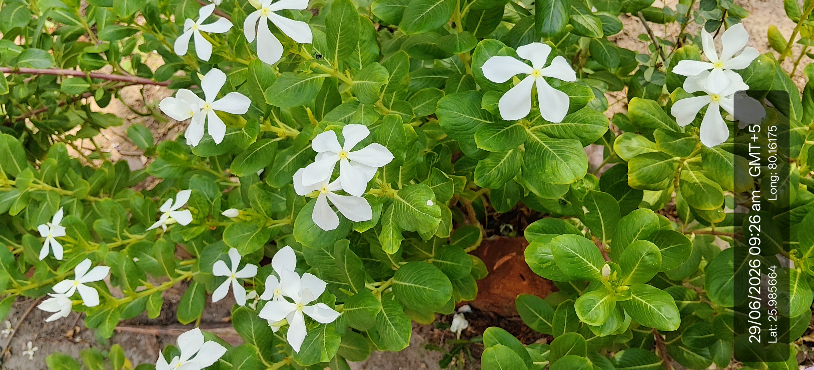

Visual record02 photographs

| Scientific name | Catharanthus roseus (L.) G.Don |
|---|---|
| Type | Herb (Perennial Herb) |
| Category | Herbs |
Habitat & Growing Conditions
- Commonly grown in gardens, parks, roadsides, and open fields. It grows well in tropical and subtropical climates with well-drained soil.
Economic Importance
- Sadabahar is a perennial flowering herb belonging to the family Apocynaceae.
- It is widely cultivated as an ornamental plant because of its attractive pink, purple, and white flowers.
- The plant contains important medicinal alkaloids such as vincristine and vinblastine.
- These compounds are used in the treatment of leukemia and other types of cancer.
- It is also used in traditional medicine for managing diabetes and high blood pressure.
- The plant flowers throughout the year and requires little maintenance.
- It attracts butterflies and other pollinating insects.
- It is drought-tolerant and grows well in warm climates.
- It is commonly planted in gardens, parks, and roadside landscapes.
- Sadabahar has high ornamental, medicinal, and economic importance.
Medicinal Importance
Medicinal notes pending.